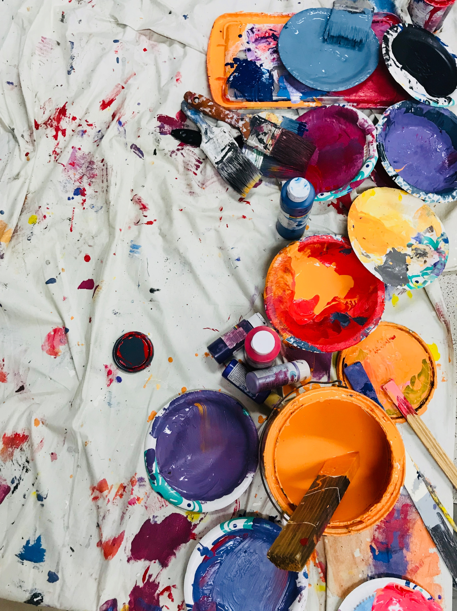

"Fandom Freaks"

12 mins
Group podcast project examining obsessive fan culture through an interview with a massive Harry Styles fan.

"Painting When You're Feeling Down: My Process + Reflection"
12 mins
Video project in which I show my painting process while discussing how painting helps me deal with stress and other negative feelings.

My Art Portfolio
5 mins
A collection of the artwork I have made throughout my art courses.